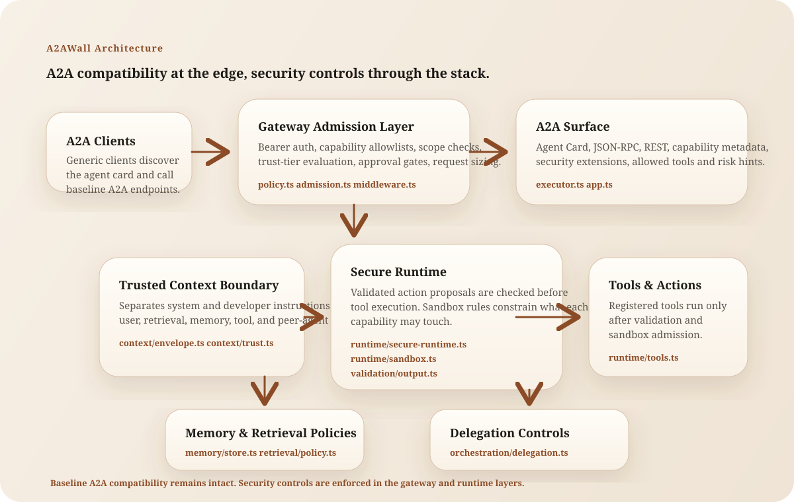

Architecture

1. Gateway admission control
Requests are admitted or rejected based on identity, capability, scopes, trust tier, approvals, and message-size limits.
2. Trusted context boundary
System and developer instructions remain privileged. User, retrieval, memory, tool, and peer-agent content are treated as reference unless explicitly trusted by policy.
3. Secure runtime and tools
Tool execution should pass through action validation and sandbox policy before it touches files, networks, APIs, or delegated agents.
4. Memory and retrieval controls
Memory writes are source-aware and tenant-aware. Retrieved documents are classified as allow, reference-only, or quarantine.
5. Delegation controls
Delegation depth, fan-out, capability allowlists, and trust thresholds constrain multi-agent blast radius.